Beaver's Burden
Project Overview
This series of beaver-inspired gizmos explores the evolving relationship between humans and beavers in the rewilding of the Kankakee Marsh. Each device supports the ecological work of this keystone species, bridging human engineering and animal architecture.
At the infrastructural scale, an ecosystem of shipping container-sized interventions manages water flow, supports field research, and creates habitat, demonstrating how design can enhance natural ecosystem restoration processes.
Challenge
How can design interventions support the natural rewilding process while respecting and enhancing the work of beavers as ecosystem engineers? The challenge was to create tools and infrastructure that work alongside beavers rather than against them, facilitating their critical role in marsh restoration.
Solution
Beaver's Burden proposes a series of scale-appropriate interventions, from wearable apparatus to infrastructural installations. These designs assist beavers in their ecological work—from gathering materials for dam construction to managing water flow across the landscape—while creating opportunities for human observation and research.
Key Features
- Wearable apparatus assisting in gathering materials for dam construction
- Combines two lemniscates to create dual volumes: one for the individual beaver, another for gathered materials
- Catamaraft: rowing-powered vessel designed to remove invasive vegetation along riverbanks
- Shipping container-sized interventions for water flow management
- Infrastructure supporting field research and habitat creation
- Bridges human engineering with animal architecture
- Facilitates rewilding of the Kankakee Marsh ecosystem
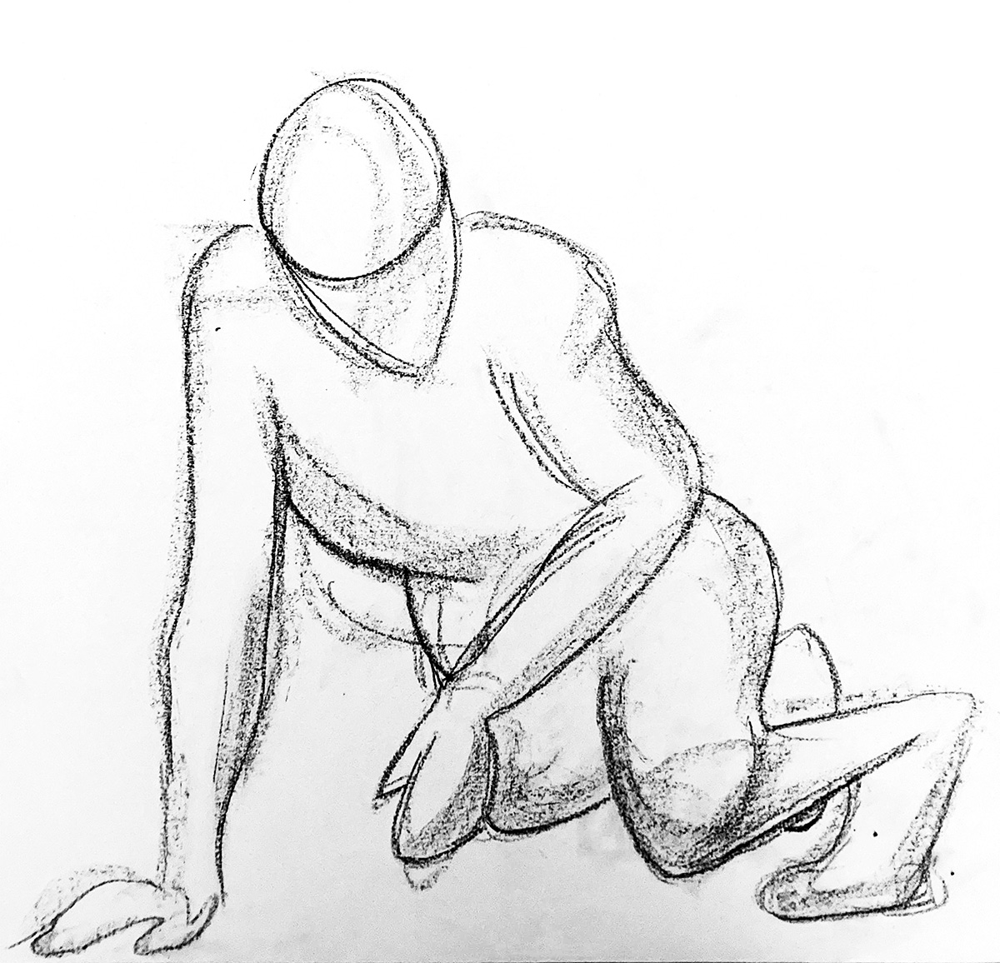
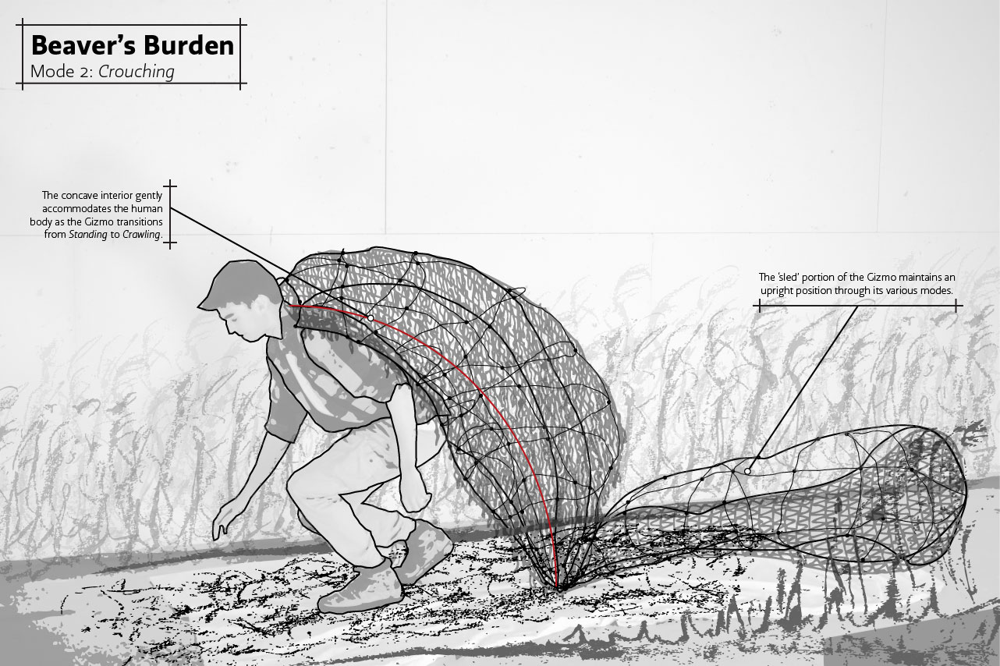
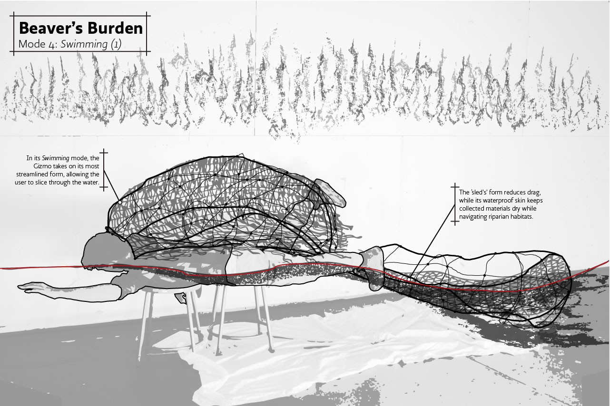
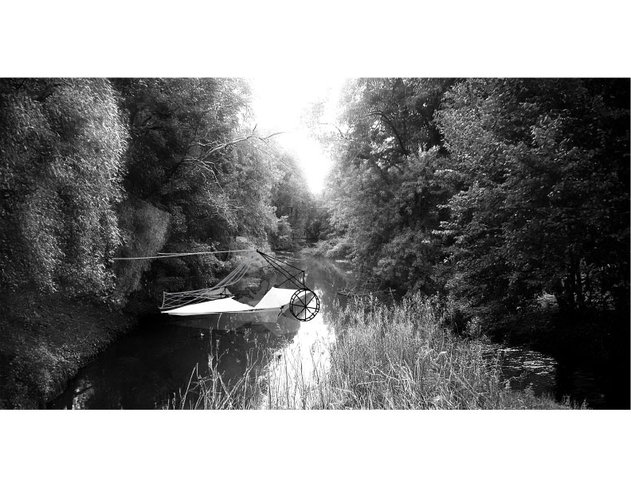
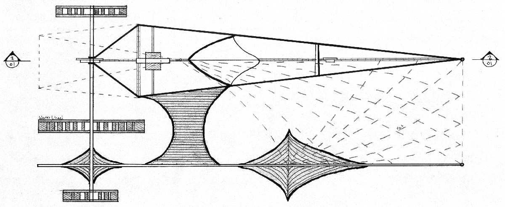
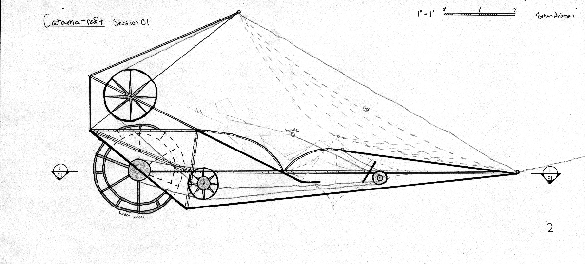
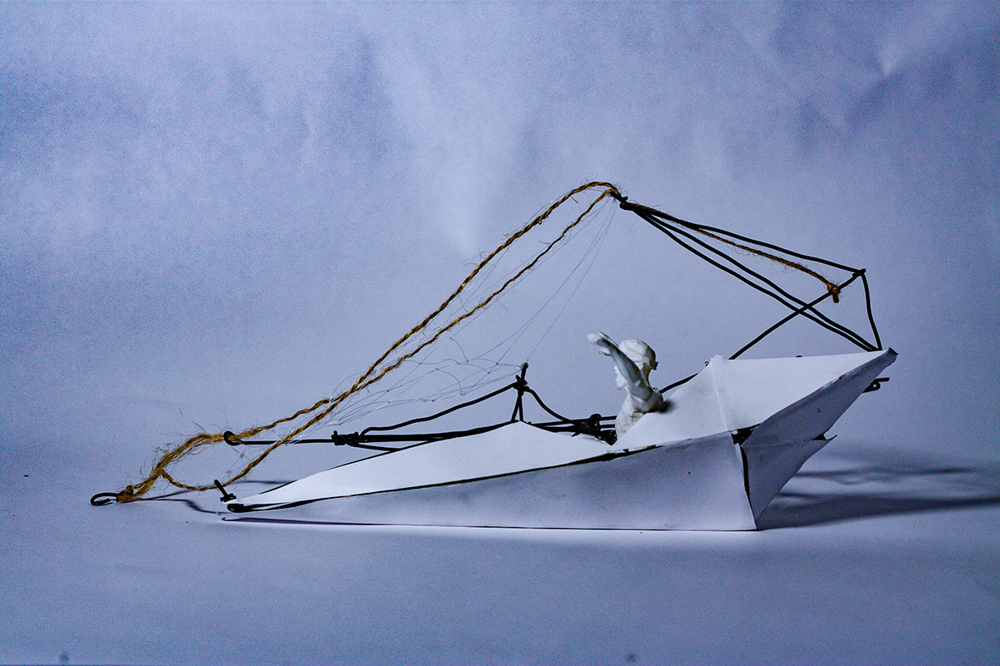


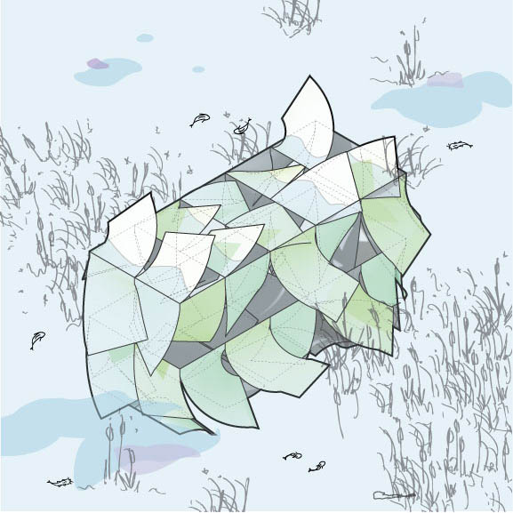
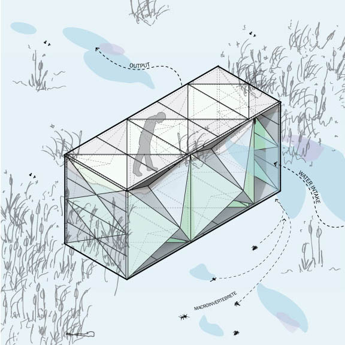
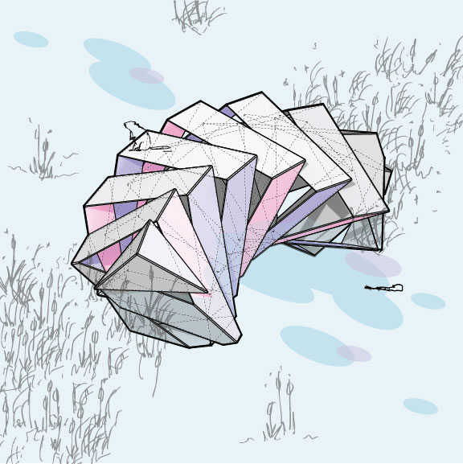
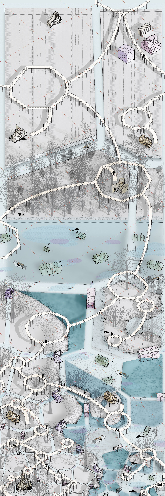
Outcomes & Impact
Beaver's Burden reimagines the relationship between human infrastructure and ecological restoration. Rather than viewing beavers as obstacles to be managed, the project positions them as collaborative engineers in the rewilding of the Kankakee Marsh. The interventions—from individual wearable devices to landscape-scale infrastructure—demonstrate how design can amplify natural processes rather than replace them.
By creating tools that assist beavers in their ecosystem engineering work, the project acknowledges the crucial role of keystone species in habitat restoration. The Catamaraft addresses invasive species management while supporting beaver habitat creation. At the infrastructural scale, shipping container-sized interventions manage water dynamics while providing platforms for research and observation. This approach illustrates how human design can work in concert with natural systems, creating a collaborative framework for ecological restoration that respects both human knowledge and animal expertise in shaping healthy wetland ecosystems.